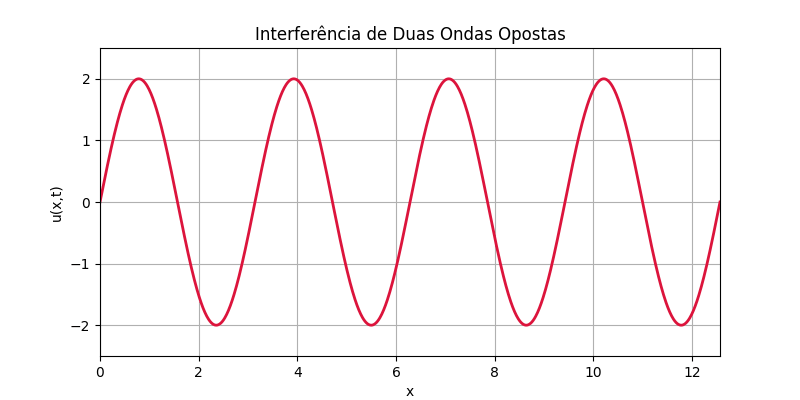

In this blog, you’ll find content on Mathematics, Statistics, and Physics, developed with rigor, theoretical foundation, and a didactic approach. The goal is to combine conceptual clarity with a professional visual presentation, using tools like LaTeX, Quarto, Python, and R.
The aim is to explore deep ideas with simplicity, intuition, and beauty — through accessible explanations, graphical visualizations, complete courses with solved exercises, and structured reading guides.
🌟 What you’ll find here:
- ✨ LaTeX and Quarto tips for visualization
- 🧠 Mathematical concepts illustrated step-by-step
- 📘 Experiments with visual and graphic teaching
- 🧮 Mathematics that is both accessible and rigorous
- 🔭 Physics explained with context and history
- 📊 Statistics focused on real-world applications
- 💻 Programming in R, Python, Julia, and Shell
- 📝 Reflections on science, method, and language
“Beauty is the first test: there is no permanent place in the world for ugly mathematics.”
— G. H. Hardy
“The universe cannot be read until we have learned the language and become familiar with the characters in which it is written. It is written in mathematical language, and its letters are triangles, circles, and other geometric figures.”
— Galileo Galilei
Over the centuries, certain formulas have stood out for their beauty, depth, and impact. This post celebrates some of the gems of mathematics and physics.
🧠 Euler’s Identity
\[ e^{i\pi} + 1 = 0 \]
Connects the five most fundamental numbers in mathematics in a simple and elegant equation.
📡 The Wave Equation
\[ \frac{\partial^2 u}{\partial t^2} = c^2 \frac{\partial^2 u}{\partial x^2} \]
Models vibrations, sounds, light, and other waves. Appears naturally in physics and differential equations.
🔢 Ramanujan’s Formula for \(\frac{1}{\pi}\)
\[ \frac{1}{\pi} = \frac{2\sqrt{2}}{9801} \sum_{k=0}^{\infty} \frac{(4k)!\,(1103 + 26390k)}{(k!)^4\,396^{4k}} \]
One of the fastest known formulas for calculating \(\pi\), discovered by Ramanujan with extraordinary intuition.
🌍 Importance of the Normal Distribution
The normal distribution is a fundamental statistical model because it accurately describes many real-world phenomena — both natural and social. It especially emerges when multiple random and independent causes influence an outcome. In such cases, data tend to concentrate around a mean, forming the classic bell-shaped curve.
🔎 Why does this matter?
Because assuming normality simplifies statistical analysis and enables the use of powerful inference tools.
📌 Practical examples:
📚 Standardized test scores: Scores tend to cluster around the average, with few students at the extremes.
🌿 Plant heights of a single species grown under similar conditions often group around a central value.
📉 Asset returns (stocks, currencies) approximate a normal curve in short timeframes — with caveats for extreme events.
📈 Assuming normality allows us to:
- Calculate probabilities using known formulas and tables
- Estimate confidence intervals
- Apply hypothesis testing
- Visualize data clearly and comparably
🧠 This example shows the power of computational visualization to understand physical phenomena and is part of the blog’s studies on visual teaching.
In physics, interference occurs when two waves meet in space. The resulting pattern depends on their relative phase.
The superposition of two sinusoidal waves with the same frequency can be written as:
\[ u(x,t) = A \sin(kx - \omega t) + A \sin(kx + \omega t) \]
This sum results in a standing wave (which oscillates but does not propagate):
\[ u(x,t) = 2A \sin(kx) \cos(\omega t) \]
🎬 Below is an animation of the interference between two identical waves traveling in opposite directions:

# interference_waves.py
import numpy as np
import matplotlib.pyplot as plt
import matplotlib.animation as animation
# Domain
x = np.linspace(0, 4 * np.pi, 1000)
A = 1
k = 2
omega = 2
fig, ax = plt.subplots(figsize=(8, 4))
line, = ax.plot([], [], lw=2, color='crimson')
ax.set_xlim(0, 4 * np.pi)
ax.set_ylim(-2.5, 2.5)
ax.set_title("Interference of Two Opposing Waves")
ax.set_xlabel("x")
ax.set_ylabel("u(x,t)")
ax.grid(True)
def init():
line.set_data([], [])
return line,
def animate(i):
t = i * 0.1
y1 = A * np.sin(k * x - omega * t)
y2 = A * np.sin(k * x + omega * t)
y = y1 + y2 # Wave superposition
line.set_data(x, y)
return line,
ani = animation.FuncAnimation(fig, animate, init_func=init, frames=100, interval=50, blit=True)
ani.save("interference_waves.gif", writer='pillow', fps=20)🆕 Latest Posts
- 👨💻 Programming
- 🔢 Module 1.2: Number Sets
- 🧭 👨💻 Programming Guide
- 🧭 ⚛️ Physics Guide
- 🧭 🧑🏫 Personal Blog Guide
- 🧑🏫 Personal Blog
- 📘 👨💻 📄 Quarto Markdown Template — Part 2
- 🧠 🔢 Module 1.2 AP: Number Sets — Advanced
- 🎓 📊 Statistics Course: Normal Distribution (Part 3)
- 🎓 📊 Statistics Course: Normal Distribution (Part 2)
This section is automatically updated with each new post.
Marcellini’s Blog — Exploring Mathematics, Statistics, and Physics with Rigor and Beauty
Created by Blog do Marcellini with ❤️ and code.